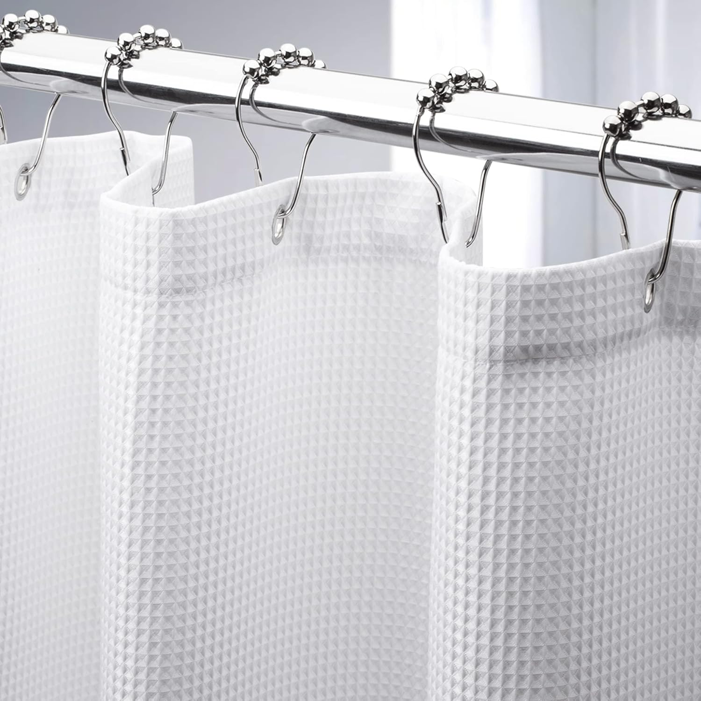
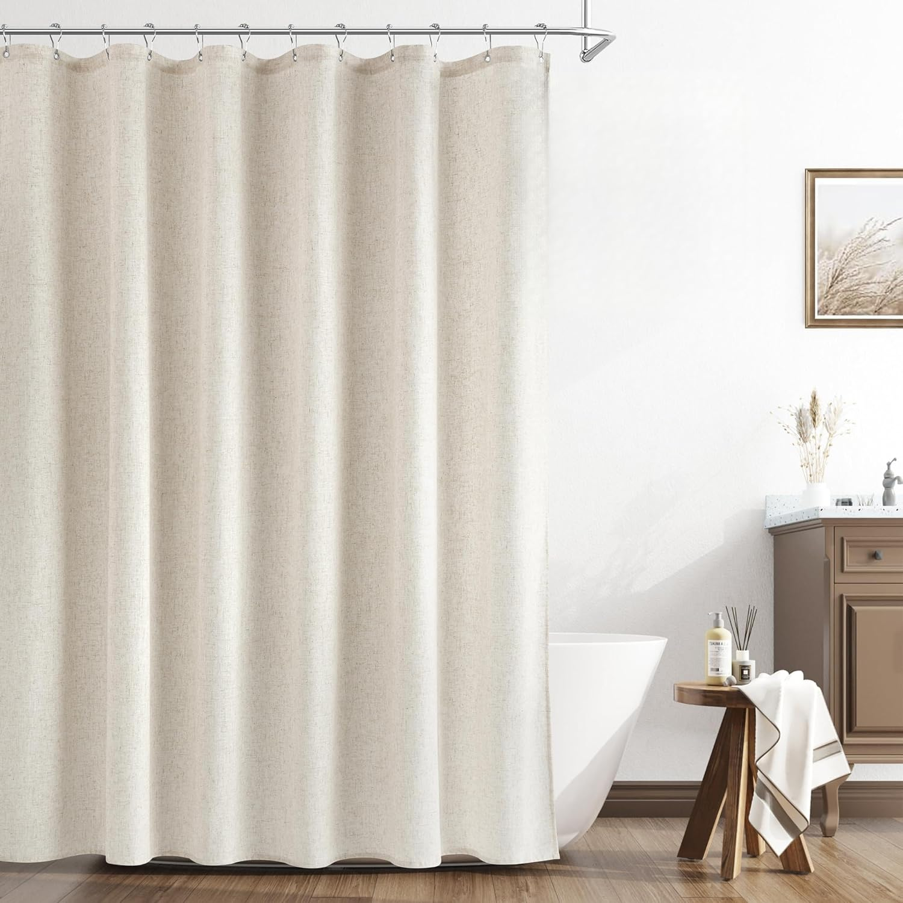
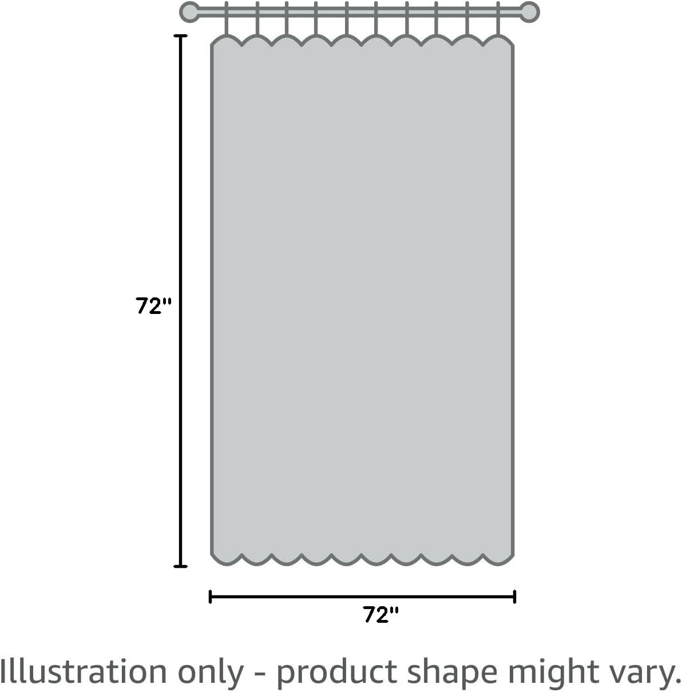
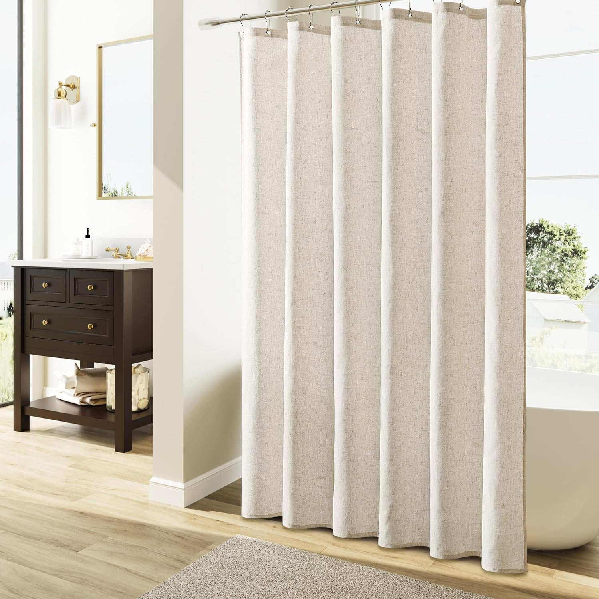
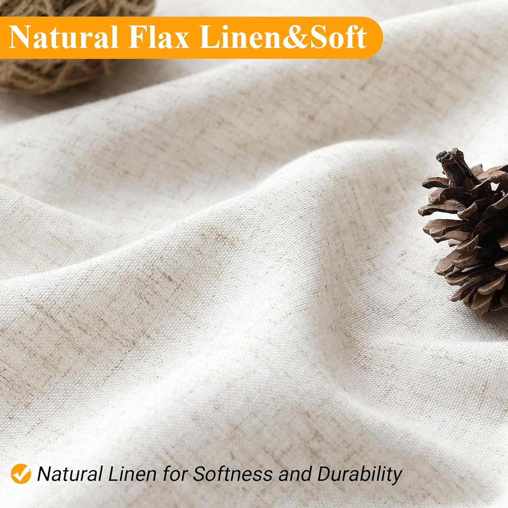
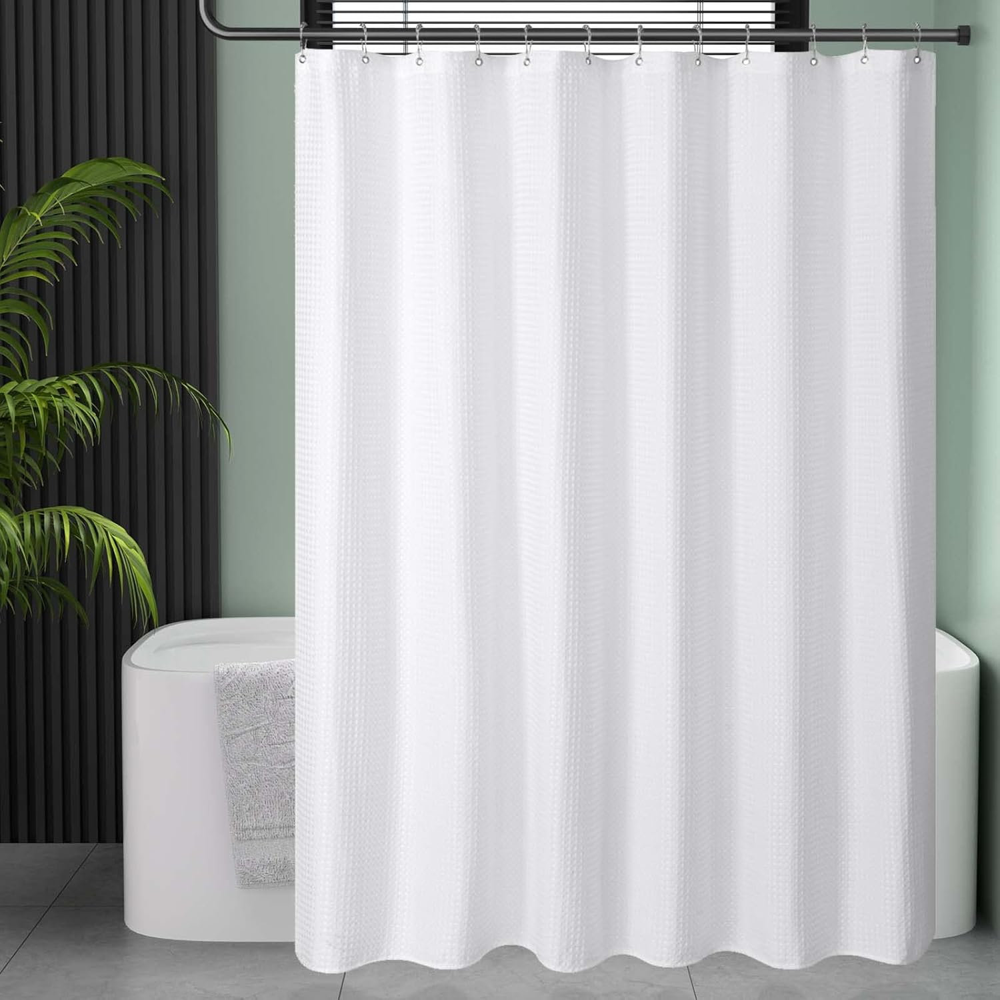
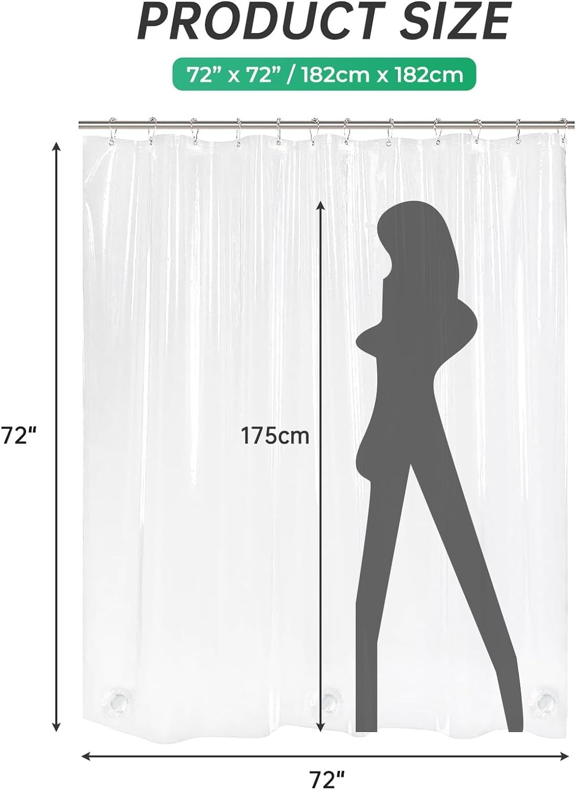
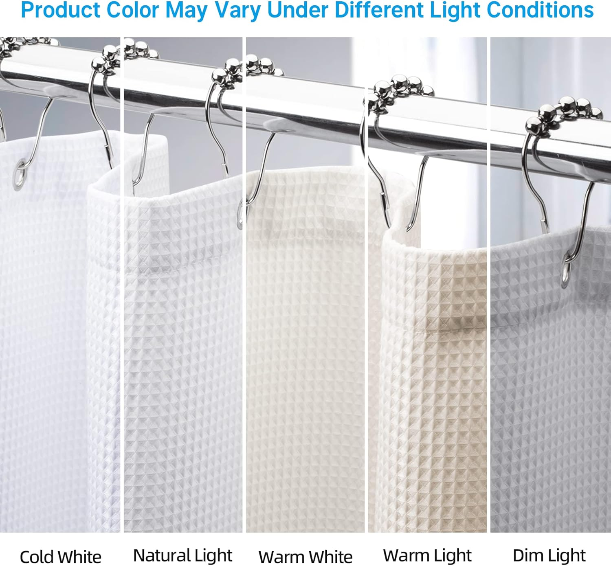
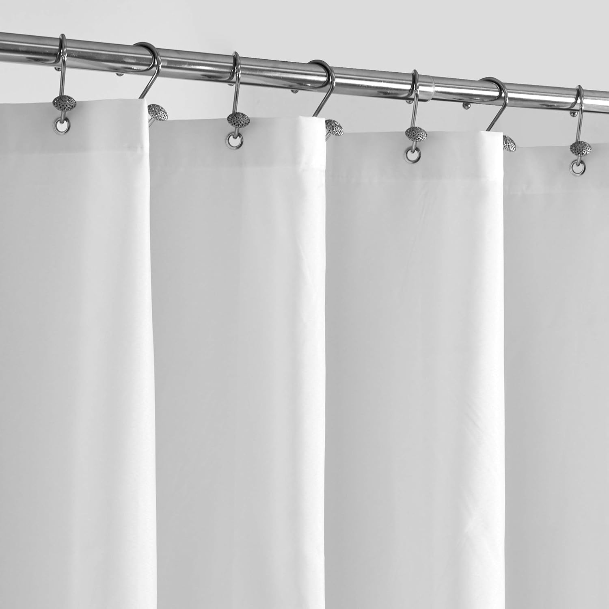
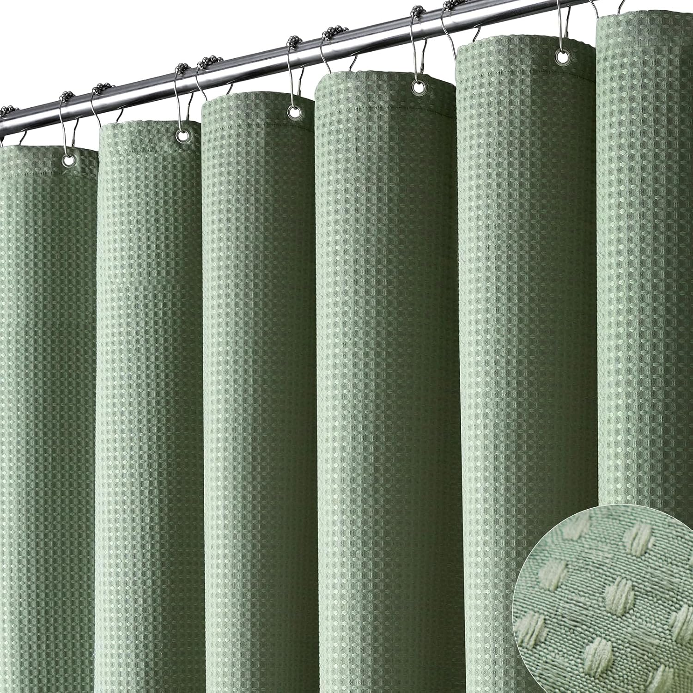

AmazerBath White Waffle Weave Shower Curtain
Hotel quality polyester | Heavy duty | Machine washable | 24,900+ reviews

When it comes to choosing a shower curtain fabric, the debate almost always comes down to two contenders: cotton (and natural fibers) versus polyester (synthetic). Both materials have passionate supporters, and both deliver genuine benefits. Cotton offers a soft, luxurious feel and natural aesthetic that appeals to eco-conscious homeowners and farmhouse design lovers. Polyester delivers practical durability, water resistance, easy maintenance, and unbeatable affordability. But which one is actually better for your bathroom?
The answer depends on your priorities. If you value a natural texture, breathable fabric, and environmentally responsible materials, cotton or cotton-linen blends may be your ideal choice. If you want a curtain that repels water, resists mold, stays wrinkle-free, and lasts for years with minimal effort, polyester is the clear winner. Most homeowners, however, do not realize just how significant the practical differences are between these two materials until they have already made a purchase and discovered the trade-offs firsthand.
In this comprehensive comparison guide, we put cotton and polyester shower curtains head to head across every dimension that matters: comfort and feel, durability, waterproofing, maintenance, mold resistance, eco-friendliness, style options, and price. We use two representative products — the Naturoom Natural Linen Shower Curtain

for the cotton/natural side and the AmazerBath Waffle Weave Shower Curtain for the polyester side — to ground the comparison in real products with real customer feedback. By the end, you will know exactly which material suits your bathroom, your lifestyle, and your budget.If you are also considering other material types beyond cotton and polyester, our Fabric vs Vinyl vs PEVA Shower Curtains guide covers the complete spectrum of shower curtain materials, including plastic and eco-friendly alternatives.
Table of Contents
Cotton/Linen Profile: Naturoom Natural Linen Shower Curtain




Naturoom Natural Linen Shower Curtain
| Material | Natural linen/cotton blend |
| Size | 72" x 72" (standard) |
| Style | Country boho farmhouse |
| Color | Neutral cream / linen |
| Weight | Weighted hem for proper hang |
| Texture | Textured natural weave |
| Waterproof | No (liner recommended) |
| Machine Wash | Yes (cold water, gentle) |
Pros
- Beautiful natural linen texture
- Breathable, eco-friendly fabric
- Farmhouse/boho aesthetic
- Weighted hem for clean hang
- Excellent price for natural fiber
- Soft, luxurious hand feel
Cons
- Requires waterproof liner
- Prone to mildew without proper care
- Can wrinkle after washing
- Slower drying time
- May shrink slightly
- Limited color options
Polyester Profile: AmazerBath Waffle Weave Shower Curtain



AmazerBath White Waffle Weave Shower Curtain
| Material | Premium polyester waffle weave |
| Size | 72" x 72" (standard) |
| Style | Hotel quality, modern clean |
| Color | White (multiple colors available) |
| Weight | Heavy duty construction |
| Texture | Waffle weave pattern |
| Waterproof | Water-resistant (liner optional) |
| Machine Wash | Yes (any temperature) |
Pros
- Naturally water-resistant
- Wrinkle-free out of the dryer
- Highly mold/mildew resistant
- Heavy duty, long-lasting
- Hotel-quality appearance
- Huge color/style variety
Cons
- Synthetic feel (not natural)
- Not biodegradable
- Can develop static cling
- Less breathable than cotton
- Petroleum-based material
- May attract lint
Head-to-Head Comparison: Cotton vs Polyester
The table below provides a quick overview of how cotton and polyester shower curtains compare across the eight categories that matter most. We explore each category in detail in the deep-dive sections that follow.
| Category | Cotton/Linen | Polyester | Winner |
|---|---|---|---|
| Comfort & Feel | Soft, natural, breathable, luxurious texture | Smooth, somewhat synthetic feel | Cotton |
| Durability | 1-2 years; may shrink or fade | 2-4+ years; resists stretching, fading | Polyester |
| Waterproofing | Not waterproof; liner required | Naturally water-resistant | Polyester |
| Maintenance | Wash gently every 2-3 weeks; iron may be needed | Machine wash any temp; wrinkle-free | Polyester |
| Mold Resistance | Low; absorbs moisture, slow drying | High; dries quickly, resists growth | Polyester |
| Eco-Friendliness | Biodegradable, natural, renewable | Petroleum-based, not biodegradable | Cotton |
| Style Options | Natural/organic aesthetics; limited colors | Endless colors, patterns, textures | Polyester |
| Price | $14-$40 + liner cost ($5-$15) | $8-$25 (no liner needed) | Polyester |
Score: Polyester wins 6 out of 8 categories. Cotton takes the lead in comfort/feel and eco-friendliness, but polyester dominates in the practical categories that affect daily use. For most bathrooms, polyester offers the better overall package. Keep reading for the full breakdown of each category.
Deep Dive: 7 Key Categories Compared
1. Comfort and Feel
Cotton wins this category decisively. There is something undeniably pleasant about the feel of natural cotton or linen fabric in a bathroom. Cotton shower curtains like the Naturoom Natural Linen have a soft, textured hand feel that adds warmth and character to the space. The fabric drapes beautifully, and the natural irregularities in the weave give it an organic, handcrafted quality that synthetic materials simply cannot replicate. If you have ever stayed at a high-end bed and breakfast or boutique hotel that used linen curtains, you know the effect: the bathroom feels elevated, intentional, and inviting.
Cotton is also breathable. This means air circulates through the fabric rather than being blocked, which can help reduce that "steamy, enclosed" feeling some people experience with synthetic shower curtains. For those with sensitive skin or chemical sensitivities, natural fibers also eliminate concerns about off-gassing or synthetic chemical exposure — a consideration that matters to many families, particularly those with young children. You can learn more about material safety in our guide on why choosing the right shower curtain matters.
Polyester has improved significantly in this area. Modern polyester shower curtains, particularly waffle-weave designs like the AmazerBath, have a texture and weight that feels surprisingly substantial and high-quality. They are a far cry from the thin, plasticky polyester of decades past. Still, when you run your hand along a polyester curtain and then a linen one, the difference in warmth and natural character is immediately apparent. Cotton feels like fabric; polyester feels like a product.
2. Durability and Longevity
Polyester wins by a wide margin. Polyester fibers are inherently stronger, more resistant to stretching, and less susceptible to degradation from moisture, light, and repeated washing. A quality polyester shower curtain like the AmazerBath Waffle Weave will typically last 2 to 4 years or more of daily use, maintaining its shape, color, and structural integrity throughout. The fabric does not shrink, does not fade easily, and does not develop the thin, worn-out patches that plague cotton curtains over time.
Cotton, while a durable fiber in many applications (think denim jeans or cotton towels), faces significant challenges in the bathroom environment. Constant exposure to moisture, heat, and steam accelerates cotton fiber breakdown. Cotton curtains tend to shrink after the first few washes, which can leave the bottom of the curtain hanging several inches too high. The fabric can also develop permanent discoloration from hard water mineral deposits, soap scum, and the early stages of mildew that set in before you notice them. Most cotton shower curtains show meaningful signs of wear after 12 to 18 months of regular use.
The real-world durability difference is reflected in customer reviews. Among the 24,900+ reviews for the AmazerBath polyester curtain, longevity and lasting quality are consistently praised. Cotton curtain reviews, across multiple brands, more frequently mention premature deterioration, shrinkage issues, and the need for early replacement. When you factor in the cost of replacement, the durability advantage of polyester translates directly to money saved over time.
3. Waterproofing
Polyester wins clearly. Polyester fibers are hydrophobic, meaning they naturally repel water rather than absorbing it. A polyester shower curtain allows water droplets to bead up and roll off the surface rather than soaking into the fabric. This is why many polyester curtains can function without a separate liner, though a liner is still recommended for maximum water containment. The AmazerBath waffle weave curtain, for example, provides meaningful water resistance right out of the package.
Cotton is hydrophilic — it absorbs water eagerly. A cotton shower curtain will soak up moisture like a towel, becoming heavy, saturated, and slow to dry. This is why a waterproof liner is absolutely essential when using a cotton shower curtain. Without a liner, water passes through the fabric onto your bathroom floor, creating a mess and promoting mold growth both on the curtain and on surrounding surfaces. The cost of a quality PEVA liner ($5-$15) should be factored into the total price of any cotton curtain setup. For help selecting the right liner, see our best shower curtain liners guide.
If waterproofing is a top priority for you, we also recommend checking our dedicated best waterproof shower curtains roundup, which focuses specifically on curtains engineered for maximum water containment.
4. Maintenance and Care
Polyester wins again. Caring for a polyester shower curtain is about as simple as laundry gets. Throw it in the washing machine on any temperature setting, tumble dry on low, and hang it back up. That is it. Polyester comes out wrinkle-free, retains its shape, and does not require ironing or special treatment. Most polyester curtains look just as good after their twentieth wash as they did after their first. For detailed cleaning instructions that apply to both materials, our how to clean your shower curtain guide covers everything step by step.
Cotton shower curtains require more careful attention. They should be washed in cold water on a gentle cycle to prevent shrinkage and fiber damage. Hot water, which would be ideal for killing mildew, can cause cotton to shrink noticeably. After washing, cotton curtains often emerge wrinkled and may require a low-heat ironing or steaming session to look their best — an extra step that many people find inconvenient for a bathroom accessory. Cotton should also be washed more frequently than polyester (every 2-3 weeks versus monthly for polyester) because its moisture-absorbing nature makes it a more hospitable environment for bacteria and mildew growth between washes.
The maintenance burden of cotton is manageable if you are willing to commit to the routine. But for busy households where shower curtain care is not going to be anyone's priority, polyester's forgiving, low-maintenance nature is a significant practical advantage.
5. Mold and Mildew Resistance
Polyester wins decisively, and this may be the most important category for many bathrooms. Mold and mildew thrive in warm, moist environments — exactly the conditions present in every bathroom after a shower. The key factor that determines how susceptible a shower curtain is to mold growth is how quickly it dries after getting wet. Polyester, being hydrophobic, sheds water quickly and dries within minutes of a shower ending. Cotton absorbs water and can take hours to dry completely, creating a prolonged window of ideal conditions for mold colonization.
According to the CDC's guidance on mold prevention, controlling moisture and ensuring materials dry quickly are the most effective strategies for preventing indoor mold growth. By this standard, polyester is inherently better suited to the bathroom environment. Cotton curtain owners can mitigate the mold risk by always spreading the curtain fully after each shower, running the bathroom exhaust fan for at least 20 minutes post-shower, and washing the curtain frequently. But these mitigation steps require consistent daily habits that polyester curtain owners can largely skip.
In poorly ventilated bathrooms — those without exhaust fans or with small windows — the mold risk with cotton curtains is especially high. If your bathroom lacks good ventilation, polyester is not just the better choice, it is the only responsible choice. Our best mildew-resistant shower curtains guide focuses on the most mold-resistant options available if this is a primary concern.
6. Eco-Friendliness
Cotton wins this category. Cotton is a natural fiber that is biodegradable, renewable, and far less damaging to the environment at the end of its life cycle compared to polyester. When a cotton shower curtain eventually wears out, it can decompose in a matter of months in a compost environment. A polyester shower curtain, made from petroleum-based plastics (polyethylene terephthalate, or PET), will persist in landfills for hundreds of years and contribute to the growing global problem of plastic waste and microplastic pollution.
That said, cotton's environmental story is not entirely clean. Conventional cotton farming is one of the most water-intensive agricultural processes on earth, consuming roughly 10,000 liters of water to produce a single kilogram of cotton fabric. It also relies heavily on pesticides and chemical treatments. Organic cotton addresses many of these concerns but comes at a higher price point. Linen (made from flax plant fibers), such as the blend used in the Naturoom curtain, is generally more environmentally efficient than cotton, requiring less water and fewer chemical inputs to produce.
For the environmentally conscious consumer, the best approach is a cotton or linen curtain made from organic or sustainably sourced fibers, paired with a non-toxic PEVA liner rather than a PVC vinyl liner. This combination minimizes both the synthetic materials in your bathroom and the environmental impact of disposal. If environmental impact is a deciding factor for you, cotton or cotton-linen blends are the more responsible choice, despite the maintenance trade-offs.
7. Style Options and Price
Polyester wins on variety and total cost. Polyester shower curtains are available in an almost limitless range of colors, patterns, textures, and styles — from solid whites to bold geometric prints to delicate florals to textured waffle weaves. Whatever your bathroom aesthetic demands, there is a polyester curtain that fits. This variety extends to specialty finishes and treatments: you can find polyester curtains with antimicrobial coatings, weighted magnetic hems, built-in rings, and other convenience features that are rarely available in cotton.
Cotton shower curtains tend toward a narrower aesthetic range. They excel at natural, neutral, organic looks — think whites, creams, oatmeals, and muted earth tones. This makes them perfect for farmhouse, bohemian, Scandinavian, and rustic bathroom designs. But if your bathroom features bold colors, contemporary patterns, or a modern minimalist palette, finding a cotton curtain to match can be challenging. The Naturoom Natural Linen, for instance, looks stunning in a farmhouse bathroom but would feel out of place in a sleek, all-white modern space.
On price, both materials are remarkably affordable at the entry level. The Naturoom linen curtain at $14.98 and the AmazerBath polyester at $15.99 are nearly identical in purchase price. However, cotton curtains require a liner (adding $5-$15 to the initial cost), and their shorter lifespan means more frequent replacements. Over a three-year period, a single polyester curtain costs roughly $16, while a cotton setup might cost $15 (curtain) + $10 (liner) + $15 (replacement curtain at 18 months) + $10 (replacement liner) = $50 or more. Polyester delivers better long-term value.
Decision Guide: Which Material Should You Choose?
After comparing cotton and polyester across every category, here are our specific recommendations based on your priorities and situation.
Choose Cotton/Linen If...
- Aesthetic is your top priority — you want a natural, textured, farmhouse or bohemian look
- You are eco-conscious — you prefer biodegradable, renewable materials over synthetics
- You have chemical sensitivities — natural fibers eliminate off-gassing concerns
- Your bathroom has excellent ventilation — exhaust fan, window, or both to prevent mildew
- You do not mind extra maintenance — frequent washing, possible ironing, using a liner
- You value a luxurious feel — the tactile softness of natural fabric matters to you
Our cotton pick: Naturoom Natural Linen — $14.98
Choose Polyester If...
- Low maintenance matters most — you want machine-wash-and-forget convenience
- Mold is a concern — your bathroom has poor ventilation or high humidity
- You want built-in water resistance — no separate liner required
- Durability and longevity matter — you want a curtain that lasts 2-4+ years
- You want maximum style options — endless colors, patterns, and textures to choose from
- Budget-conscious long-term — lower total cost of ownership over time
- You have a busy household — kids, multiple users, no time for curtain maintenance
Our polyester pick: AmazerBath Waffle Weave — $15.99
Product Recommendations at Every Price Point
Whether you have decided on cotton or polyester, here are our top picks across different budgets and needs. All of these products have been selected based on customer reviews, material quality, and real-world performance.
Best Budget Polyester

Amazon Basics Fabric Shower Curtain (White)
If you want the simplest, most affordable polyester curtain that just works, this is it. The Amazon Basics fabric curtain delivers clean white appearance, wrinkle-free performance, and machine-washable convenience at an unbeatable price. No frills, but also no complaints — exactly what a budget curtain should be.
Best Value Polyester (with Extra Features)

ALYVIA SPRING Waterproof Fabric Shower Curtain
The ALYVIA SPRING combines a hotel-quality soft fabric feel with genuine waterproofing and three weighted magnets at the bottom for superior water containment. At under $10, it delivers features you normally find in curtains costing two to three times as much. The 56,700+ reviews and 4.5-star rating speak for themselves — this is one of the best-selling shower curtains on Amazon for a reason.

Best Premium Polyester (Waffle Weave)

Dynamene Sage Green Waffle Weave Shower Curtain
If you want a polyester curtain that looks and feels more upscale than the standard options, the Dynamene waffle weave is an excellent choice. The textured waffle pattern gives it a boutique-hotel appearance, while the heavy-duty construction ensures it hangs properly and resists wear. The sage green color is on-trend for 2026 bathrooms and pairs beautifully with white tile and natural wood accents.

Best Natural/Cotton Option
Naturoom Natural Linen Shower Curtain
For those who want the natural fiber experience, the Naturoom delivers a gorgeous linen-cotton texture at an affordable price point. The neutral cream color and textured weave make it a centerpiece for farmhouse and bohemian bathrooms. Just remember to pair it with a quality liner and be prepared for the extra maintenance that natural fibers require.
For even more fabric shower curtain options across both materials, see our comprehensive best fabric shower curtains roundup, which covers waffle weaves, linen looks, textured designs, and luxury picks for every budget.
Frequently Asked Questions
Polyester is better for most people because it is naturally water-resistant, dries quickly, resists mold and mildew, is machine washable without special care, and lasts 2-4 years or longer. Cotton offers a more luxurious feel and is more eco-friendly, making it the better choice for those who prioritize natural materials and have well-ventilated bathrooms. For the average household, polyester's practical advantages make it the more sensible choice, which is why it dominates shower curtain sales on Amazon.
Cotton shower curtains are more susceptible to mold and mildew than polyester because cotton absorbs and retains water. To prevent mold: always use a waterproof liner behind a cotton curtain, spread the curtain fully after each shower to promote airflow, ensure your bathroom has good ventilation (exhaust fan running 20+ minutes after each shower), and machine wash the curtain every two to three weeks. In poorly ventilated bathrooms or humid climates, polyester is the significantly safer choice for mold prevention.
It is not recommended. Cotton is not waterproof, and water will soak through the fabric, drip onto your bathroom floor, and accelerate mold growth on both sides of the curtain. Some cotton-linen blends have a denser weave that provides light splash resistance, but even these will not stop a direct shower spray. A quality PEVA liner costs under $10 and dramatically extends the life of your cotton curtain while protecting your bathroom floor. Think of the liner as a required accessory, not an optional add-on.
A quality polyester shower curtain typically lasts 2 to 4 years with proper care, and some heavy-duty options like the AmazerBath Waffle Weave can last even longer. Polyester resists stretching, fading, shrinkage, and wrinkles, and it tolerates machine washing at any temperature without deterioration. Cotton curtains, by comparison, typically last 1 to 2 years before showing signs of wear, discoloration, shrinkage, or persistent mildew staining that washing cannot remove.
Generally yes. Cotton is a natural, biodegradable fiber that decomposes in months, while polyester is derived from petroleum and persists in landfills for hundreds of years. However, conventional cotton farming uses significant water resources and pesticides, so the environmental picture is nuanced. Organic cotton and linen are the most eco-friendly shower curtain options. For the environmentally conscious buyer, a cotton or linen curtain paired with a non-toxic PEVA liner (rather than PVC vinyl) is the most responsible setup.
Polyester is the best material for humid bathrooms. It dries quickly, repels water naturally, and resists mold and mildew growth even in consistently damp environments. Waffle-weave polyester curtains are particularly effective because the textured surface promotes faster air circulation and drying. For bathrooms without exhaust fans, without windows, or in humid climates, cotton should generally be avoided unless you are extremely diligent about post-shower ventilation and frequent washing. See our mildew-resistant shower curtains guide for more options.
Waffle weave shower curtains can be made from either material, but the most popular and highly rated options on Amazon are polyester. The AmazerBath and Dynamene waffle weave curtains, for example, are both polyester. Polyester waffle weave combines the textured, hotel-quality appearance of the waffle pattern with all the practical benefits of synthetic fabric: water resistance, mold resistance, wrinkle-free performance, and durability. Cotton waffle weave curtains do exist but are less common and share cotton's inherent challenges with moisture and maintenance.
Final Verdict: Polyester Wins for Most People
After comparing cotton and polyester shower curtains across every dimension that matters — comfort, durability, waterproofing, maintenance, mold resistance, eco-friendliness, style, and price — polyester is the better choice for the majority of households. It wins six out of eight categories and dominates in the practical areas that most affect daily bathroom life. Polyester shower curtains dry faster, last longer, resist mold better, require less maintenance, offer more style options, and cost less over time. For busy families, humid bathrooms, or anyone who wants a curtain they can install and largely forget about, polyester is the clear winner.
That said, cotton and linen shower curtains have a legitimate place in the right bathroom. If you prioritize natural aesthetics, eco-friendliness, and tactile luxury — and your bathroom has good ventilation and you are willing to invest in the extra maintenance — a cotton or linen curtain like the Naturoom can transform your bathroom into a warm, organic retreat. The key is going in with realistic expectations about the maintenance commitment and the need for a liner.
Our recommendation: Start with polyester unless you have a specific reason to choose cotton. The AmazerBath Waffle Weave at $15.99 offers the best combination of quality, appearance, durability, and value for the overwhelming majority of bathrooms. If you later decide you want the natural look, you can always switch — that is the beauty of shower curtains compared to permanent fixtures. For a broader look at the best options across all materials, check our Top 7 Best Shower Curtains of 2026.
Ready to Choose Your Perfect Shower Curtain?
Explore our expert guides for more in-depth reviews and recommendations.
All recommendations backed by extensive research and real customer reviews
Complete Your Bathroom Upgrade
Our network of expert review sites covers every bathroom essential: